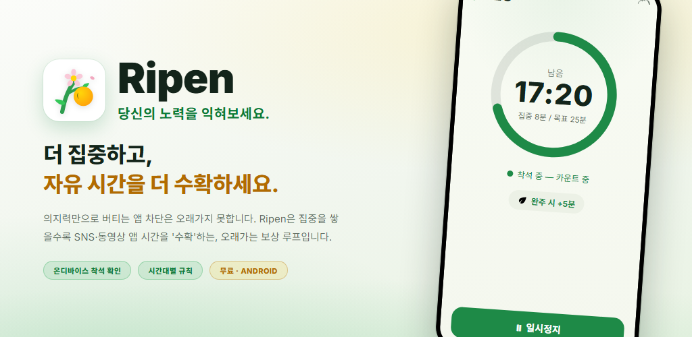
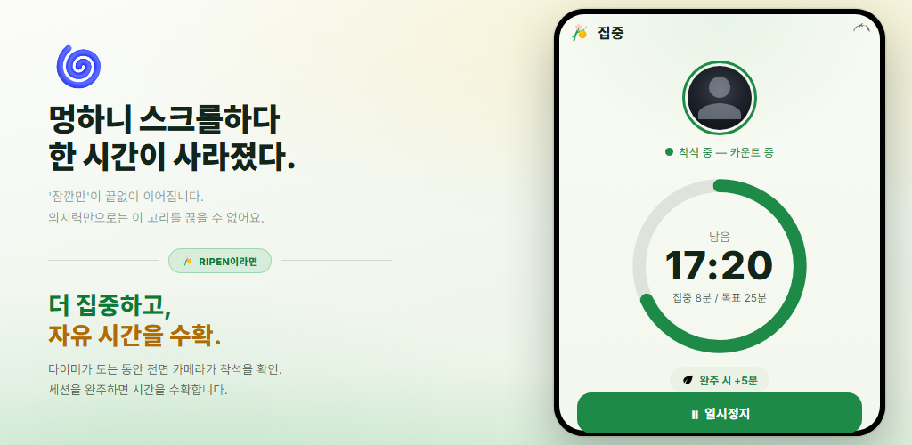
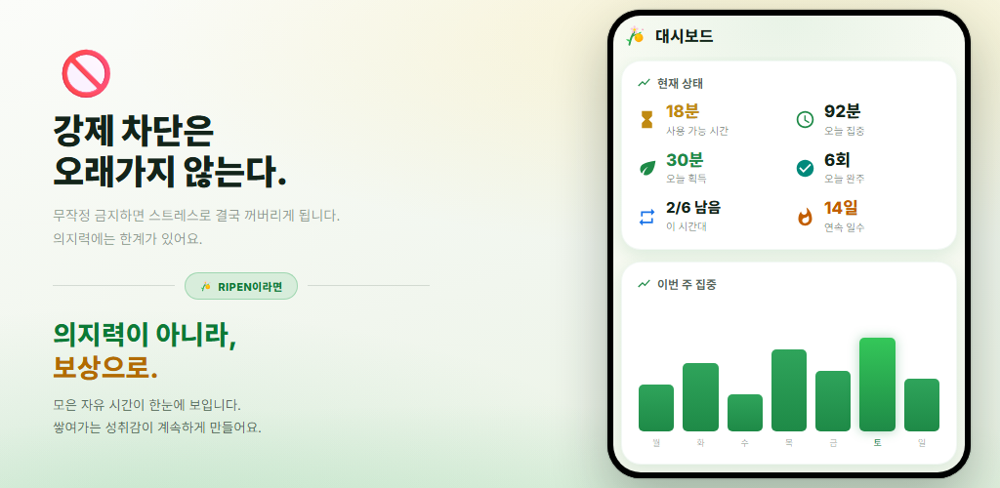
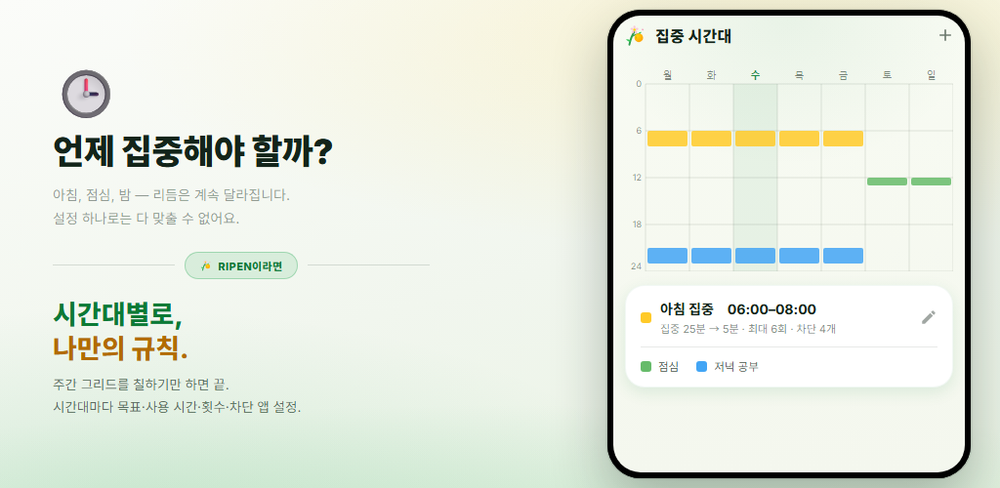
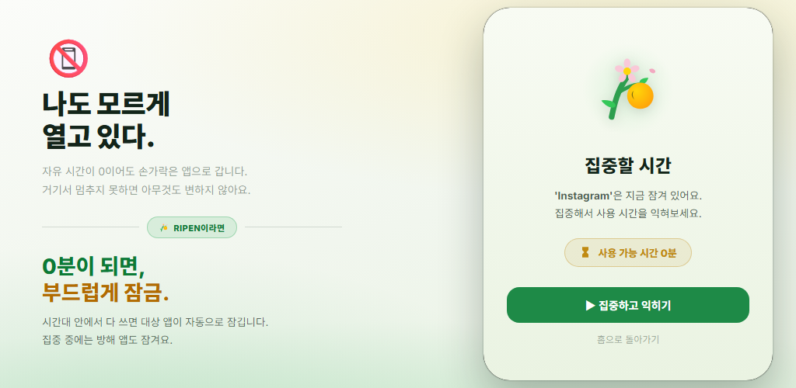
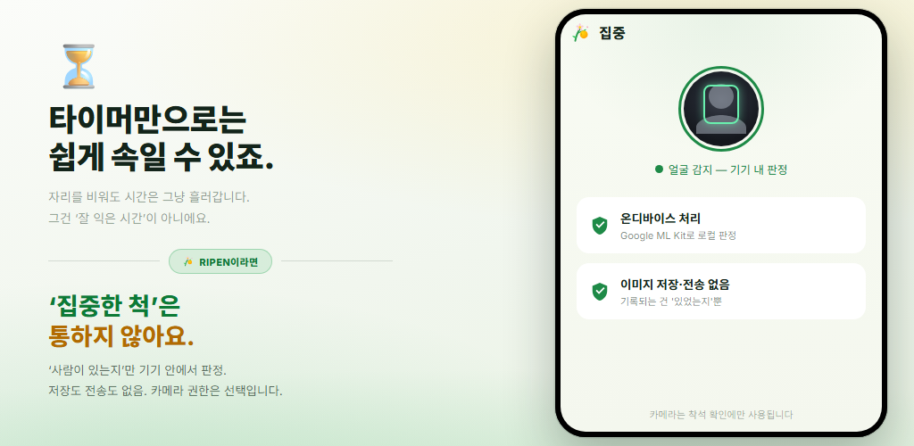

보상 루프
집중 타이머를 완주할 때마다 SNS·동영상에 쓸 수 있는 시간을 얻습니다. 참는 것이 아니라 보상이 행동을 바꿉니다.
참기만 하는 앱 차단은 오래가지 않습니다. Ripen은 집중과 공부를 쌓을수록 SNS·동영상에 쓸 시간을 ‘수확’할 수 있는 보상형 습관 앱입니다. 카메라 착석 확인은 기기 안에서 처리되며, 시간대별로 끌 수도 있습니다.
Android 8.0 이상 · 무료 · 광고 없음 · 계정 불필요

복잡한 설정은 필요 없습니다. ‘언제, 얼마나 집중하면, 얼마나 쓸 수 있는지’만 정하면 됩니다.
주간 격자를 칠해 집중하고 싶은 요일과 시간대를 설정
착석 확인이 켜져 있으면 전면 카메라가 자리에 있는지 확인하며 카운트다운
완주할 때마다 정해 둔 만큼 사용 가능 시간을 획득 (단어 퀴즈도 가능)
사용 가능 시간이 0분이 되면 선택한 앱을 부드럽게 차단
착석 확인이 켜진 시간대에서는 얼굴이 화면 앞에 있는 동안에만 집중 타이머가 진행됩니다. 목표까지 완주하면 정해 둔 만큼 SNS나 동영상에 쓸 시간을 얻습니다. 도중에 그만둔 회차는 획득이 없습니다.

‘사용 가능 시간’, ‘오늘 집중’, ‘오늘 획득’, ‘연속 일수’를 한눈에 확인하세요. 주간·월간 추이 그래프와 시간대별 히트맵으로 내가 집중이 잘되는 시간대도 보입니다.

주간 격자를 칠하기만 하면 집중하고 싶은 요일과 시간대가 설정됩니다. 시간대마다 집중 목표, 1회 사용 시간, 횟수 상한, 차단 앱, 카메라 착석 확인을 따로 정할 수 있습니다. 시간대 밖에서는 자유입니다.

그 시간대의 사용 가능 시간을 다 쓰면, 선택한 앱을 열 때 차단 화면이 나타납니다. 집중 세션 중에도 방해되는 앱을 잠급니다. 규칙을 나중에 느슨하게 바꾸지 못하게 막는 ‘설정 잠금’도 있습니다.

타이머만으로는 자리를 비워도 시간이 흘러갑니다. Ripen은 전면 카메라로 ‘얼굴이 화면 앞에 있는지’만 기기 안에서 판단하며, 이미지는 저장하지도 전송하지도 않습니다. 카메라를 쓰지 않는 시간대도 선택할 수 있습니다.

집중해서 시간을 수확하고, 다 쓰면 앱이 잠기기까지의 흐름을 동영상으로 소개합니다.
‘끊고 싶은데 못 끊는’ 습관을 보상으로 바꿉니다.
집중 타이머를 완주할 때마다 SNS·동영상에 쓸 수 있는 시간을 얻습니다. 참는 것이 아니라 보상이 행동을 바꿉니다.
전면 카메라로 ‘화면 앞에 있는지’만 판단합니다. 기기 안에서 처리하며 이미지는 저장·전송하지 않습니다. 시간대별로 끌 수도 있습니다.
요일과 시각으로 여러 시간대를 설정하세요. 시간대마다 집중 목표, 사용 시간, 횟수 상한, 차단 앱을 따로 정할 수 있습니다.
영어 단어 4지선다 퀴즈를 정해 둔 개수만큼 맞혀도 1회분을 얻습니다. CEFR 레벨별 약 10,000단어를 수록했고, 레벨 진단·복습 목록·나만의 단어 덱도 지원합니다.
시간대가 시작되는 순간부터 먼저 쓸 수 있는 시간입니다. 아직 집중하지 않았어도 조금 쓸 수 있고, 집중 보상에 더해집니다.
설정을 바꿔 여가 시간을 늘리지 못하게 막는 약속(커미트먼트) 기능입니다. 규칙을 느슨하게 하려면 잠금 해제를 예약하고 1–30일을 기다려야 합니다.
집중 추이, 집중 캘린더, 완주율, 가장 집중이 잘되는 시간대, 차단 앱 사용 추이까지 시각화합니다.
앱을 열지 않아도 상시 알림에 사용 가능 시간, 다음 집중 시간대, 집중 남은 시간이 표시됩니다. 완주하면 소리와 진동으로 알려 드립니다.
테마는 시스템 기본값, 라이트, 다크 중에서 선택할 수 있습니다. 앱은 영어와 일본어를 포함한 12개 언어로 이용할 수 있습니다.
‘집중 확인에 카메라’라고 하면 걱정될 수 있습니다. Ripen은 개인정보 보호를 최우선으로 설계되었습니다.
얼굴 착석 판단은 Google ML Kit로 기기 안에서 끝납니다. 영상이 외부 서버로 전송되는 일은 없습니다.
판단하는 것은 ‘얼굴이 있는지’뿐입니다. 사진이나 영상을 저장하지도, 전송하지도 않습니다. 기록하는 것은 자리에 앉아 집중한 초 단위 시간뿐입니다.
집중 기록과 설정은 기기에 저장되며 Ripen의 서버로 보내지 않습니다. Android 백업이 켜져 있으면 설정이 Google 계정 백업에 포함되어 다시 설치할 때 복원됩니다.
가입이나 로그인이 필요 없고, 광고나 분석 도구도 들어 있지 않습니다. 다운로드하면 바로 시작할 수 있습니다.
Google Play에서 다운로드할 수 있습니다